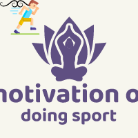
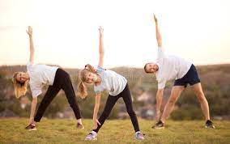

home page
Sport Habit
contact us
Self-Motivation

An exercise psychologist works with non-athlete clients or everyday exercisers to help them
learn how to make working out a habit. This work can include some of the same techniques used
by other sports psychologists, such as goal setting, practicing mindfulness, and the use of
motivational techniques.Uses of Sports Psychology Contemporary sports psychology is a diverse field and there are a number of different topics
that are of special interest to sports psychologists. Here are a few areas of sports psychology and how they are utilized.
Overcoming Self-Doubt

Self-doubt can create havoc on your performance.
People everywhere find themselves doubting or lacking confidence in their ability to perform a task.
Take a moment to reflect on the past
three days in your life. How often have you questioned yourself on if you should be the one doing!
Strategies for Increasing Motivation

When we think of motivation, we think about the famous pre-game
hype speeches and inspirational half-time talk to “never give up, “keep fighting till the end,” and “where
there’s a will, there’s a way.” While these seem to work universally in the movies and Make exercising fun!
When exercising is fun, it feels like less of a chore. If you love music, play your favorite tunes when you exercise.
It’s all about positive association. If pain and dread are associated with exercise, it will only become harder and harder to stick to the plan.
When you’re exercising outside, try going slowly, enjoying the scenery, and reveling in nature. If you’re competitive, joining a local sports league is a great way to have a good time while you exercise.
Having a workout buddy is also a fun way to find motivation for getting active. The CDC says when you work out with a partner,
you’re more likely to feel motivated, be adventurous with your workouts, and maintain consistency.
Start small
From the start, not many of us have the determination to stick to
a schedule of an hour at the gym for 3-4 days a week, but building a habit starts with
consistency.
Instead of doing long intervals of exercise, try out little workouts here and there, but
do it every day. This will make it easier to develop sports and exercise into a daily habit. According
to WebMD, just 10 minutes of aerobic activity each day can lower your risk of heart disease.
On average, it takes over two months of consistent action to acquire a habit. So the key here
is to exercise as often as possible over this period of time. Let’s face it, doing small workouts that take 15-20 minutes
is a lot less time consuming, and seems like less of an ordeal than hour-long workouts.